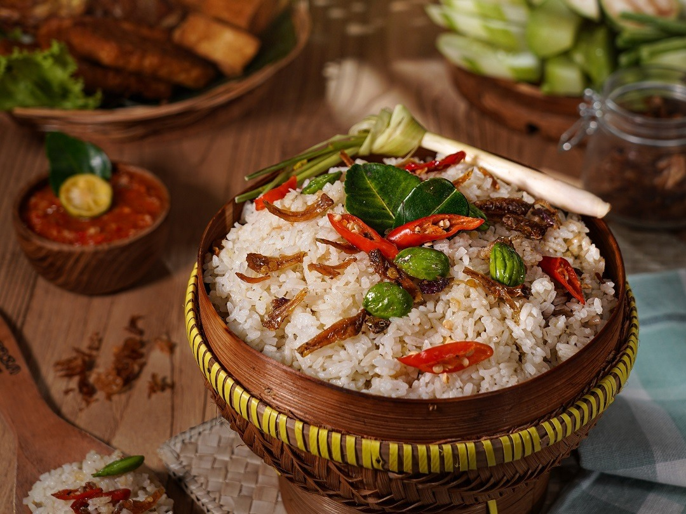

Foto ilustruese


Gjeoparki Ciletuh është një luginë piktoreske në Java perëndimore që është e mbushur me ujëvara të mëdha dhe gjëra të tjera të mira për t'u parë. Kjo zonë është një gjeopark global i përcaktuar nga UNESCO dhe ka disa nga ujëvarat më të mira në Indonezi, por shumica e turistëve ndërkombëtarë nuk kanë dëgjuar kurrë për të, kjo e ben kete vend akoma me te vecante.
1.Ujëvara Cimarinjung Një nga pikat më ikonike në Gjeoparkun Ciletuh, kjo ujëvarë madhështore zbret nga shkëmbinjtë e thyer në një pishinë të qetë poshtë. Është një vend ideal për fotografimin e natyrës dhe relaksimin.
2.Pikëpamja e Puncak Darmës: Ecni deri në Puncak Darma për pamje gjithëpërfshirëse të Oqeanit Indian, tarracave të orizit dhe lumenjve gjarpërues. Lindja dhe perëndimi i diellit këtu janë thjesht magjike.
3.Plazhi Palangpang: Ky plazh i izoluar është i përsosur për not, krehje plazhi dhe për të shijuar pamje paqësore bregdetare. Është gjithashtu një vend i mrekullueshëm për të shijuar shijet lokale të detit.
4.Kodrat e Amfiteatrit: Eksploroni formacionet natyrore shkëmbore të ngjashme me amfiteatrin që i japin Ciletuh identitetin e tij unik gjeologjik. Udhëtimet me guidë shpjegojnë rëndësinë gjeologjike të zonës dhe historinë e lashtë.
1.Ikan Bakar (peshk i pjekur në skarë): Peshk i sapokapur i pjekur në skarë deri në perfeksion, i shërbyer me sambal (salcë djegëse pikante) dhe oriz të zier në avull—një pjatë vendase që duhet ta provoni!
2.Nasi Liwet Një pjatë tradicionale orizi sundanez e gatuar në qumësht kokosi, e shërbyer me pulë të skuqur, tempeh, tofu dhe sambal.
3.Durian Ciletuh: Nëse jeni një aventurier ushqimor, mos humbisni frutin vendas të durianit, i famshëm për strukturën e tij kremoze dhe aromën e fortë.
4.Ushqim deti Satay: Provoni karkaleca me hell, kallamar dhe peshk të pjekur në skarë mbi prush, të shërbyer me salcë kikiriku të shijshëm.
1.Eko-Resorte dhe Lozha: Qëndroni në resorte miqësore me mjedisin me pamje nga oqeani ose të vendosura në xhungël. Shumë prej tyre ofrojnë turne me udhëzues dhe paketa aventure.
2.Shtepia me vendasit Përjetoni mikpritjen autentike Sundaneze duke qëndruar me familjet vendase. Do të shijoni ushqime të gatuara në shtëpi dhe histori kulturore.
3.Bungalot në plazh: Për një përvojë më të qetë, zgjidhni një shtëpi njëkatëshe buzë plazhit ku mund të zgjoheni me zhurmën e valëve dhe pamjet mahnitëse të lindjes së diellit.
4.Vila në kodër: Zgjedhni një vilë në kodër me pamje panoramike të luginave dhe vijave bregdetare të Gjeoparkut - një mjedis i përsosur për relaksim dhe meditim.